Collaborative Dual-Arm Franka Robot Control
This team project developed a collaborative manipulation system for two Franka Panda robotic arms. The objective was to pick up a cube, hand it from one robot to the other, and place it at a target location. The system brought together ROS 2, MoveIt 2 motion planning, kinematics, physics-based simulation, computer vision, and physical robot control.
The complete dual-arm pick-pass-place sequence was demonstrated in RViz and Gazebo. Physical testing was carried out on a single Franka arm, including hardware communication, gripper control, and vision-guided object pickup. The full dual-arm handover was not demonstrated on physical hardware.
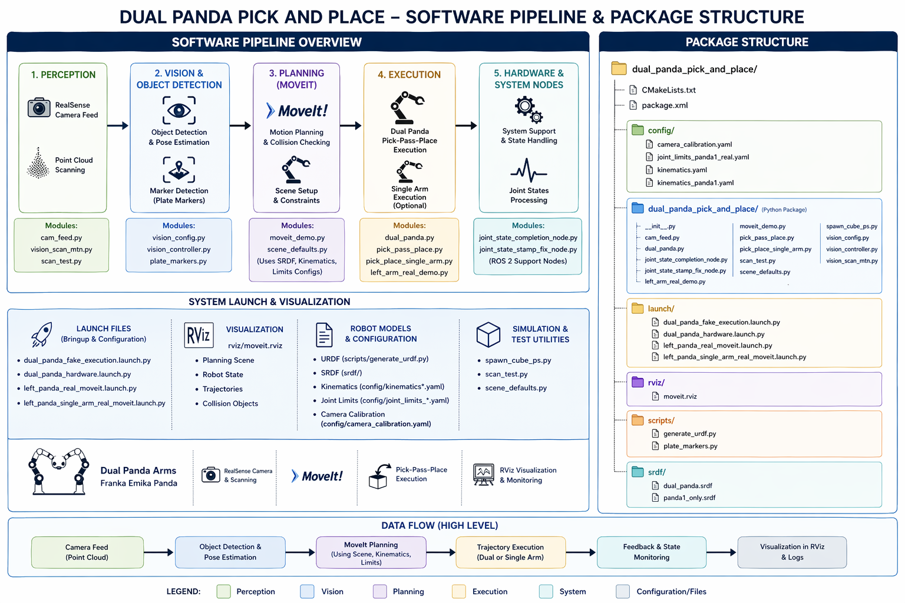
A unified robot description combined two Franka Panda arms into one shared coordinate frame. Each robot used a separate joint namespace, while the virtual base positions reflected the measured laboratory arrangement. This made it possible to plan coordinated motions and visualize the complete workspace.
MoveIt 2 and the Kinematics and Dynamics Library (KDL) were used to solve inverse kinematics from target end-effector poses. A combined planning group and collision matrix supported trajectory planning for both manipulators. Initial validation in RViz used simulated hardware controllers to check the motion sequence and collision constraints before moving to a physics simulator.
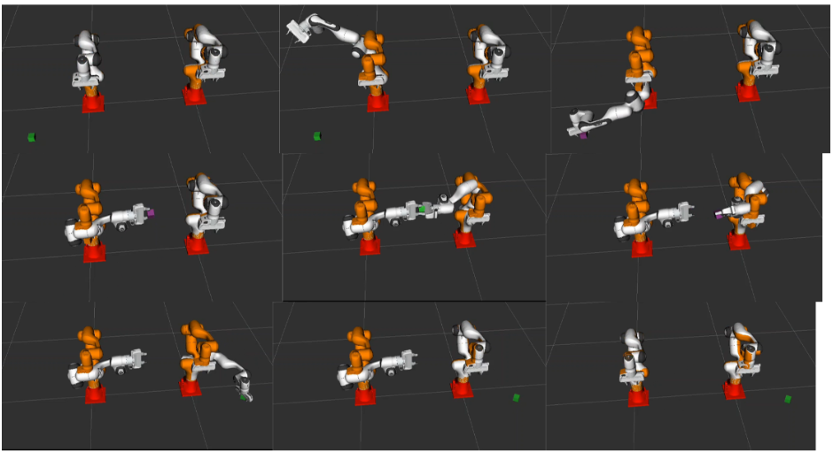
The RViz demonstration established that the planned motions were kinematically feasible, but it did not model the full physical interaction between the cube and the grippers. The project therefore extended the ROS 2 workflow into Gazebo, using a ros2_control loop and an object spawner configured with mass and collision properties.
One significant challenge was keeping the cube securely attached during the handover. Adjusting friction, contact, and mass parameters alone did not prevent slipping in the physics simulation. A grasp-fixation plugin was integrated to constrain the cube to the gripper during contact, allowing the team to validate the overall pick-pass-place sequence without treating simulated friction as a reliable grasp.
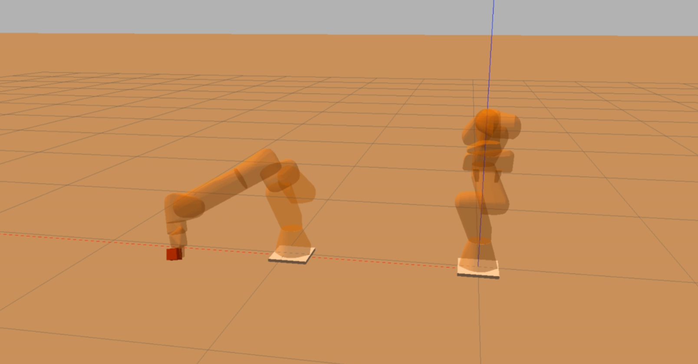
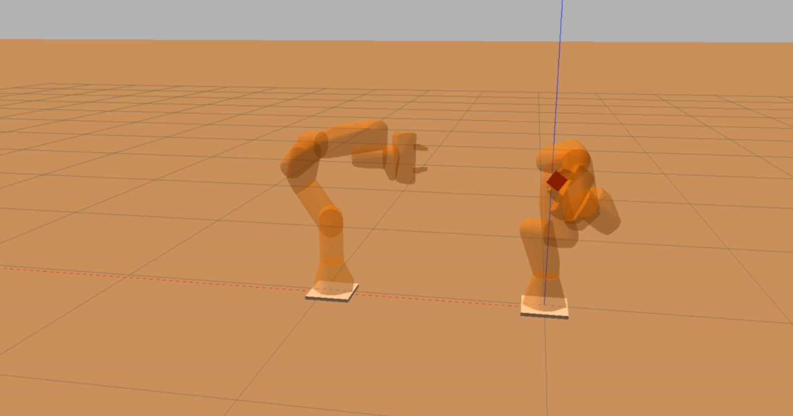
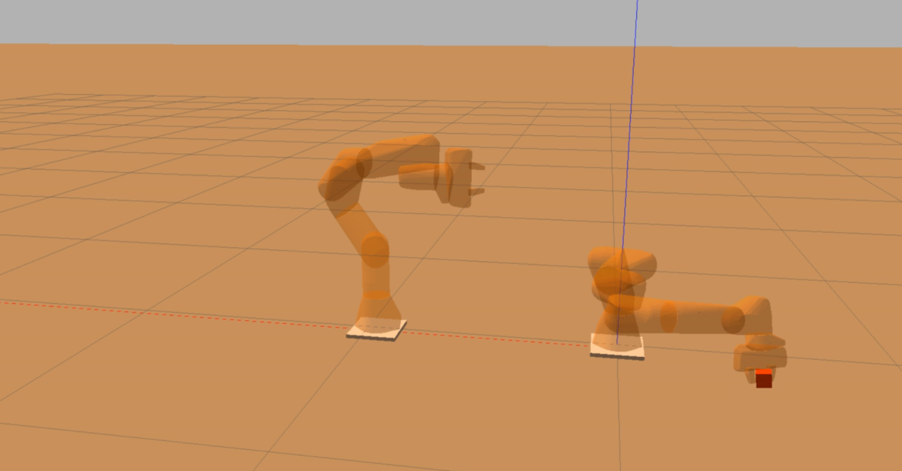
For the physical robot experiments, a USB camera mounted near the end effector was calibrated using a checkerboard and ROS 2 camera tools. An OpenCV pipeline processed the camera feed through smoothing, HSV-based filtering, thresholding, morphological operations, and contour analysis to isolate the target cube.
Detected object geometry and centroid measurements were converted into position corrections for the robot. A four-position perimeter search helped locate objects outside the initial camera view, while incremental visual servoing guided the gripper toward the target.
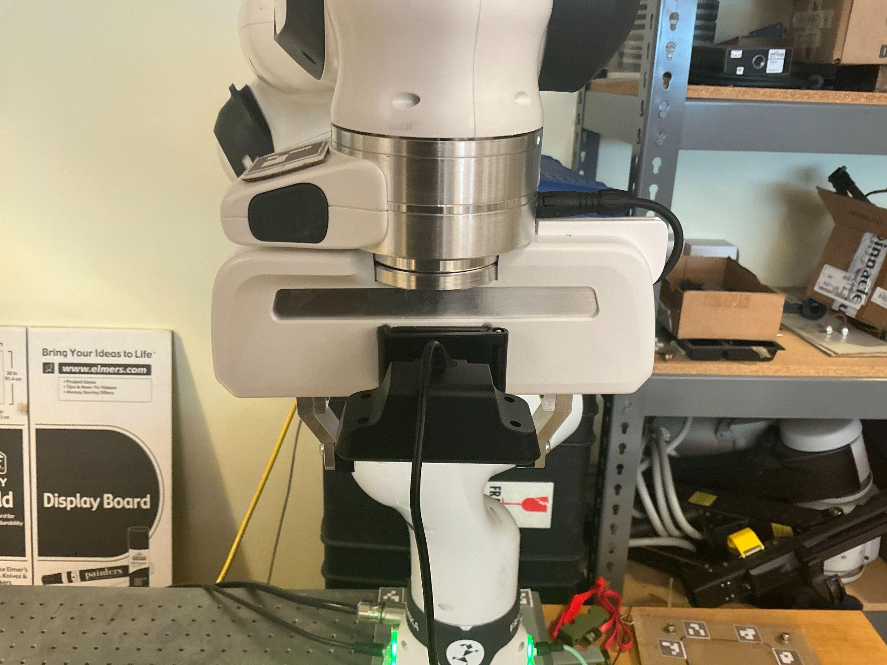
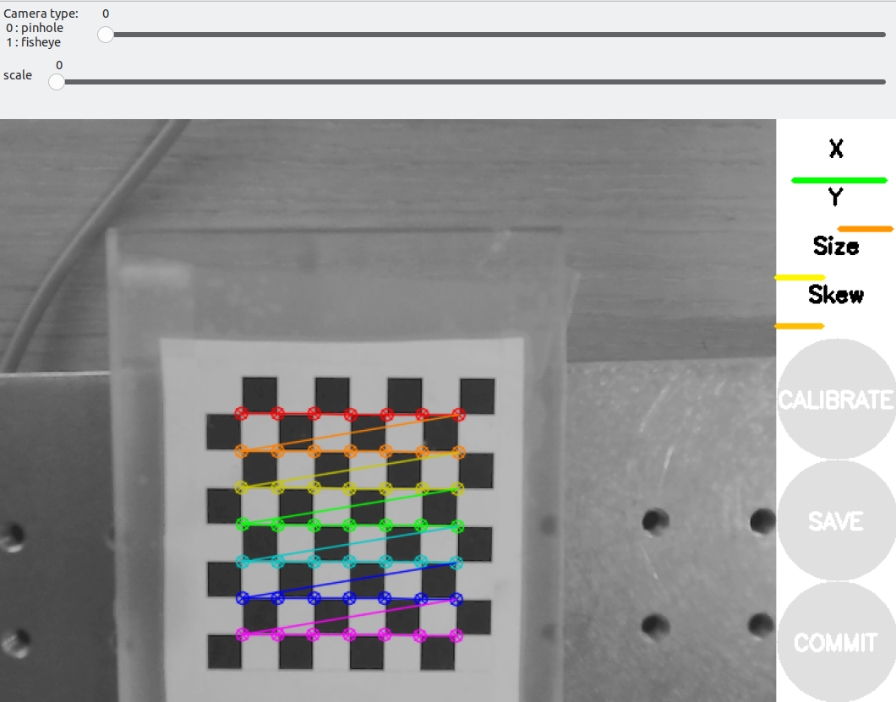
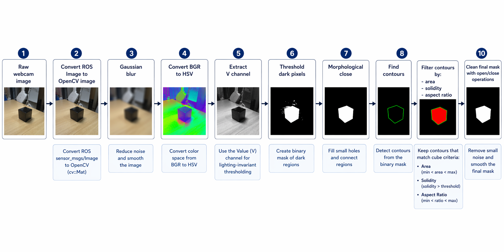
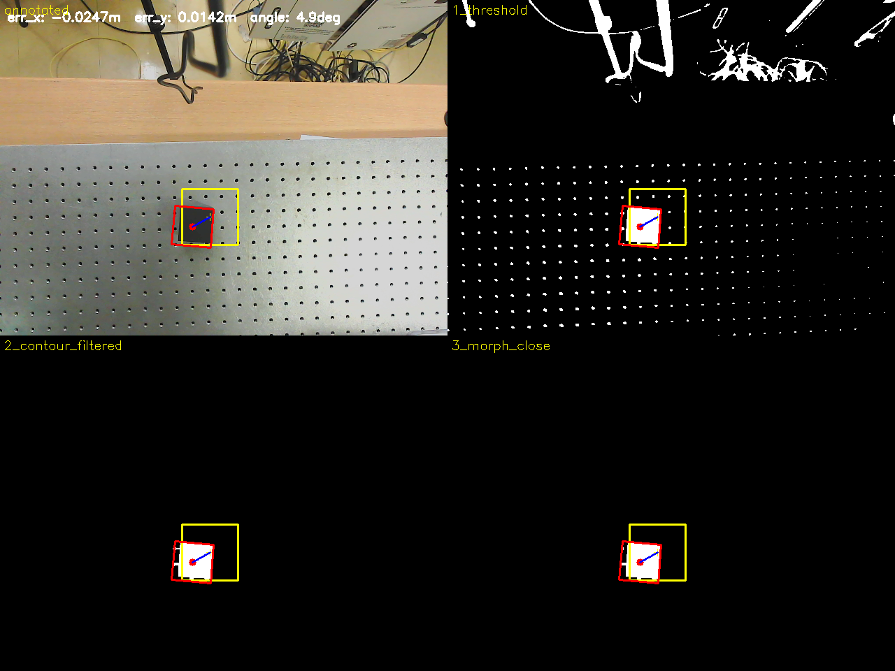
The physical implementation successfully brought up one Franka robot through the ROS 2 hardware interface, verified controller operation and joint-state feedback, and integrated the gripper. Motion planning was visualized in RViz and tested near the real worktable.
Vision-guided positioning reached sub-centimeter error relative to the detected cube centroid, sufficient for gripping in the reported test. Hardware and driver compatibility required additional integration work. Access to the second robot control PC limited the physical demonstration to one arm, so dual-arm coordination remained a simulation result.
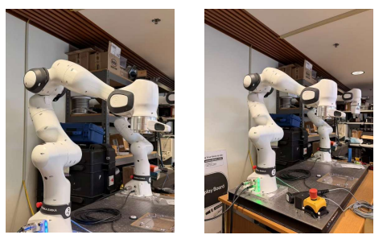
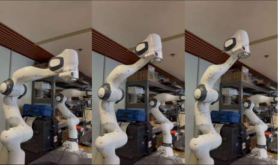
This project highlighted the difference between a motion plan that looks correct in visualization and a manipulation sequence that behaves reliably in a physics environment. Introducing mass, collisions, and contact dynamics exposed grasping problems that were not apparent in RViz alone.
Working on the Gazebo integration reinforced the importance of debugging across software layers, from robot control interfaces and object spawning to contact behavior. It also showed why simulation workarounds should be documented clearly: the grasp-fixation plugin made it possible to test high-level coordination, but it did not demonstrate a physically accurate friction-based handover.